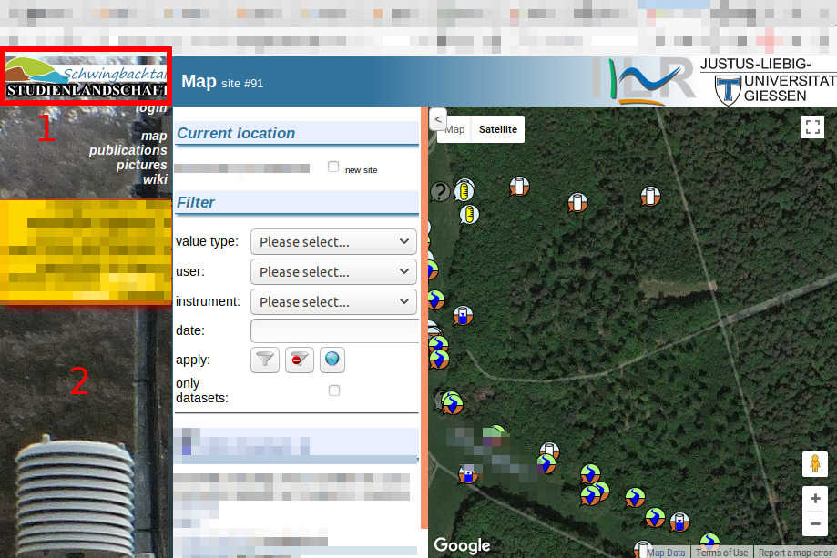

Usage¶
Server operation¶
Views¶
See views chapter for all views, that are displayed on the left side navigation bar of the user interface.
Customization¶
Logo and image¶
The user can customize the logo (1) and the background image (2).

Therefore to change (1) the path webpage/media/schwingbach-logo.png and for (2) the path at
webpage/media/navigation-background.jpg has to be altered.
Import data¶
The data import is one of the core features of the platform. The import saves the measured data into a structured database schema.
The data import process consists of several steps, (1) upload files into the file system of the server and (2) create import configuration file (see) and (3) import via configuration into database. Already imported data can be further altered (split) and reused (transformations).
Upload datafiles¶
Data files are uploaded via the datafiles tab. Measurement data can only imported by file. Therefore measurement files are uploaded onto the servers file system. Any file can be uploaded onto the servers file system.
Import¶
It’s only possible to import files with xls,xlsx,csv as file extension.
A data file has a maximum file size that it cannot exceed, otherwise the import algorithm will time out.
Manipulate datasets¶
Split datasets:
Configuration files¶
The import saves the measured data into a structured database schema. Unfortunately all measurement output of instruments in the field have different structures. Therefore a solution is that the user has to provide a configuration file, for each instrument-specific structure. A configuration file specify a key-value pairs-like mapping of instruments data schema that’s about to be written into the database schema. The pair of keywords and their values (full list see below) have to be consistent, so the server can import the measured data.
The configuration file is a definition of the import process of all files in a directory.
The concept of a configuration file assumes, that in general each data files import information can be covered by a
description and multiple column descriptions.
A import description contains information that depict the import on file level and the column descriptions on column level.
All descriptions of the configuration, are made by the user once, contain all information to automatically import the data of multiple files.
So the user is able to omit most of the configuration of future imports for data files in this folder.
Import description keywords¶
- instrument int: The database id from the instrument that produces that file. Is Mandatory and has no default.
- skiplines int: The amount of lines, which the import algorithm will skip, before reading data rows. Is optional and default ist 0.
- delimiter str: Symbol used to separate the columns. Is Optional and default is
,. - decimalpoint str: Symbol used to separate decimal place. Is Optional and defalt is
.. - dateformat str: Format of the date in the datecolumns. Default is
%d/%m/%Y %H:%M:%S - datecolumns list or int: Number of column(s), which contains the date in dateformat, first column is 1.
- project str: Links to project from database
- timezone str: In pytz format
- nodata list: list of values that don’t represent valid data. E.g. [‘NaN’]
- worksheet int: XlsImport only The position of the worksheet of an excel file. Optional and default is the first (1)
- sitecolumn int: LogImport only Number of column, which contains the site as character sequence.
- value float: LogImport only
- logtext str: LogImport only
- msg str: LogImport only
Column description keywords¶
- name str: Name of the column and name of the dataset. Also name of the type of data, as defined for the value type number
- column int: Position of the column in the file. Note: The first column is 0
- valuetype int: Id of the value type stored in the column.
- factor float: If the units of the column and the valuetype differ, use factor for conversion
- comment str: The new dataset can be commented by this comment
- difference str: If True, the stored values will be the difference to the value of the last row
- minvalue float: This is the allowed lowest value (not converted). Lower values will not be imported
- maxvalue float: This is the allowed highest value. Higher values will not be converted
- append int: For automatic import, append to this datasetid
- level float: Level property of the dataset. Use this for Instruments measuring at one site in different depth
- access int: Access property of the dataset. See wiki for a list of all access levels.
- ds_column int: ManualMeasurementImport only explicit dataset for the uploading column
- sample_mapping dict: ManualMeasurements and LogImport only Special keyword for manual measurements to map
labcodes to site ids. E.g.
{'keywords': 'value'}
If no {*}.conf file is present in a folder, the parent directory is searched for a configuration file.
There should be only one configuration file per folder.
File encoding
Configuration files are processed with the `configparser` module. This module requires that a file is encoded in `utf-8` or a subset. If a config file is not encoded in `utf-8` or a subset, when the file import is initiated in the config files directory a error message is displayed to the user.
Configuration file example:
TBD.
; description part
[IC (Name of the config file)]
; TBD
instrument = 30
skiplines = 1
dateformat = %d_%m_%Y
datecolumns = 2
sitecolumn = 3
sample_mapping = {'A1W': '112',
'A2W': '113',
'A3W': '114',
'B1': '85',
'B2': '86',
'B3': '87',
'E1': '88',
'E2': '89',
'E3': '90',
'F1': '79',
'F2': '80',
'F3': '81',
'FF1': '91',
'FF2': '92',
'GL1': '109',
'GL2': '110',
'GL3': '111',
'K1': '82',
'K2': '83',
'K3': '84'}
; column part
[N-Nitrat (descriptor of the column)]
column = 5
name = N-Nitrat
valuetype = 16
factor = 1
minvalue = 0
maxvalue = 100